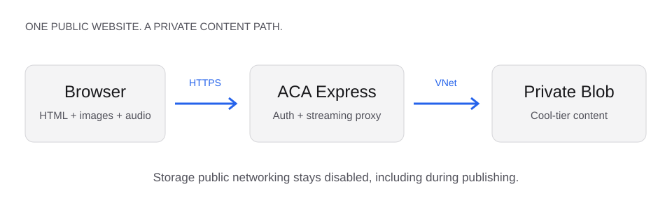

A small site.
Private storage.
No upload firewall window.
The browser reads a website. The application reads private blobs. Publishing takes the same private route, with a short-lived capability that is switched off afterward.

The site is not the container
HTML and images are content objects. The container contains only the reader, authentication and publishing code. Updating this page does not require rebuilding the image.
Private storage and private readers are different
Storage has no public data path. Reader access is a separate choice: explicitly public content, or application login with an allowlist. Protecting Blob networking does not authenticate website visitors.
Publishing is a temporary capability
The upload API normally returns 404. A publishing run briefly enables authenticated streaming CRUD, then disables the routes, removes the token digest and revokes temporary write access. There is no public Storage exception.